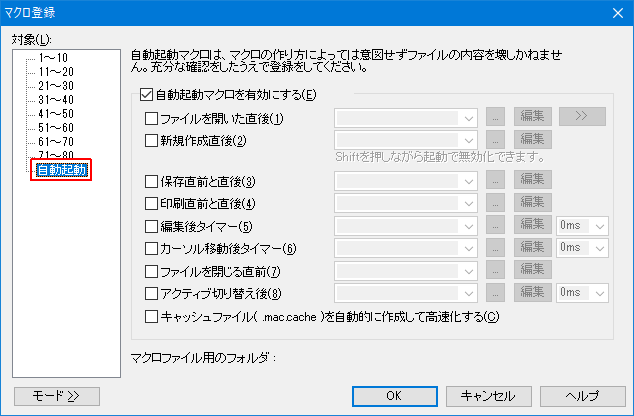

【０】自動起動マクロとは
【１】設定方法
【２】マクロ側の処理
【３】注意事項
マクロを実行するには、何かしらのキー操作や、起動オプションで指定する必要がありましたが、秀丸エディタVer.6.00 から、秀丸エディタのイベント発生時にマクロを自動的に実行する事が可能になりました。 (Ver.6は一部のイベントのみ対応)
秀丸エディタのイベントとは、以下になります。
「自動起動マクロ」で何が便利になるかは、実行するマクロによりますが、以下のような事が可能です。
「自動起動」なので、マクロを実行したくないファイルにも、マクロを実行する事になります。その為、実行するマクロの内容にもよりますが、マクロ内で実行条件を絞るなど、対策が必要な場合もあります。
「自動起動」ですが、マクロから各種操作を行った場合には、基本的に「自動起動」する事はありません。 (例外あり、後で説明あり)
つまり、
openfile "〜";というマクロを実行しても「ファイルを開いた直後」で指定したマクロは、実行される事はありません。ユーザーが操作した場合のみ実行されます。
通常のマクロと同じで、「マクロ」メニューから、「マクロ登録」を選択します。
「マクロ登録」ダイアログが表示されるので、「対象」から「自動起動」を選びます。

自動起動マクロ自体を、有効にする/しないの設定です。
後は、自動起動させたいイベントにチェックを入れ、マクロを指定します。
「編集後タイマー」、「カーソル移動後タイマー」、「アクティブ切り替え後」は、イベントが発生してから、マクロを実行するまでの遅延時間も設定できます。(遅延時間内に操作された場合は、実行されない。)
指定できるマクロは、1つだけです。複数のマクロを指定する場合には、起動用のマクロを用意し、そのマクロの中からexecmacro文 で各マクロを実行する事になります。
その場合は、「キャッシュファイルを自動的に作成して高速化する」は意味を持ちません。
自動起動マクロ用に以下の キーワード/関数/文 が用意されています。必要に応じて使用してください。 (「保存」と「印刷」の場合、「直前」と「直後」を識別するのに「geteventparam 関数」を使用します。)
各キーワード/関数/文の詳細は、マクロヘルプの「自動起動マクロ」を参照してください。
イベントから起動された場合、どのような条件で呼び出されたかな詳細な情報を取得します。イベントによって意味が変わります。
例えば、「保存」と「印刷」の「直前と直後」を区別するのにこの関数を使用します。
自動起動マクロとして呼び出されたとき、マクロ実行後の処理を秀丸エディタに指示します。イベントによって意味が変わります。
例えば、イベント自体を中断させる事も可能です。(「ファイルを閉じる直前」の場合、閉じる処理を中断する)
「保存」と「印刷」には、「直前」と「直後」がありますが、呼び出されるマクロは一つです。その為、マクロ内で「直前」と「直後」を判断する必要があります。
判断するには、geteventparam関数を使います。「保存」と「印刷」では、
geteventparam(0)の戻り値で判定し、"0" なら「直前」、"1"なら「直後」を示します。
ファイルを閉じる場合には、以下の順番でイベントが発生します。(保存は編集されていた場合のみ実行される。)
状態を保存するようなマクロを実行する場合、「ファイルを閉じる直前」で状態を保存しても、ファイル保存問い合わせで、「いいえ」を選択され内容を廃棄されると、保存した内容とファイルの内容が一致しないという状況になります。
基本的には、マクロ実行中に各種操作を行っても、自動起動マクロは実行されません。例外的に、マクロ終了後、「編集後タイマー」と「カーソル移動後タイマー」を「自動起動」させる事は可能です。
この2つのイベントを自動実行するには、setcompatiblemode 文 で指定します。
マクロ実行中に、「自動起動マクロ」を実行する方法は提供されていないので、どうしても自動起動マクロを実行したい場合は、レジストリから登録情報をよみとり、 execmacro 文 で実行する方法もあります。ただし、通常の自動起動マクロと違い、eventキーワードや、geteventparam関数の戻り値はセットされません。
自動起動マクロで起動された場合、起動されたイベントの種類およびパラメータの値は、 execmacro文で実行されたマクロからも取得可能です。
逆に、execmacro文で実行されたマクロから、seteventnotify 文を実行しても、問題なく、処理されます。(seteventnotify 文で設定した内容は有効)